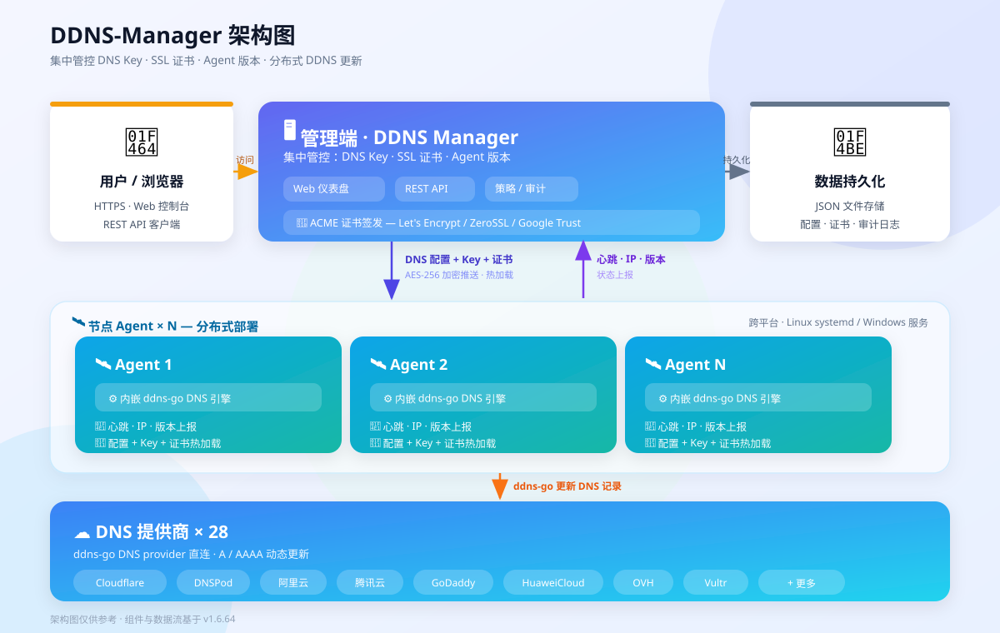

内嵌 ddns-go DNS 引擎的集中管理平台 — 统一管控 DNS Key、SSL 证书、Agent 版本
DDNS-Manager 采用 中心化管理 + 边缘执行 架构。Manager 作为控制面统一管理 DNS Key、SSL 证书、Agent 版本和部署状态；Agent 部署于各节点，内嵌 ddns-go DNS provider，在本地执行 DNS 记录更新和证书部署。

Manager 集中管控 DNS Key · SSL 证书 · Agent 版本；节点 Agent 内嵌 ddns-go DNS 引擎，直连 DNS 提供商（共 28 家）更新 DNS 记录。
统一查看所有节点状态、IP、版本、DNS 健康
支持多供应商 DNS Key 统一存储与分配
AES-256-GCM 加密推送至各节点，自动部署
Let's Encrypt / ZeroSSL / Google Trust 集成
Git tag 驱动 + 符号链接安装 + 一键回滚
SMTP 邮件通知 + 冷却控制
| 组件 | 要求 |
|---|---|
| Manager | Linux x86_64 / arm64, Go 1.25+ (仅构建时) |
| Agent | Linux (amd64/arm64/arm) 或 Windows 7+ |
| 网络 | Manager 与 Agent 间 HTTPS 可达 |
| 存储 | ~50MB (不含运行时数据) |
# 拉取镜像 docker pull ghcr.io/ocoj/ddns-manager:latest # 启动 (数据持久化到 /opt/ddns-manager/data) docker run -d \ --name ddns-manager \ --restart unless-stopped \ -p 9877:9877 \ -v /opt/ddns-manager/data:/data \ ghcr.io/ocoj/ddns-manager:latest # 查看日志 docker logs -f ddns-manager
首次启动后访问 https://<主机IP>:9877，使用默认密码 Admin12345 登录并立即修改。
# 构建全部组件 (Manager + Agent + 安装器) bash scripts/build.sh # 或分别构建 go build -trimpath -o build/ddns-manager ./cmd/manager # Manager go build -trimpath -o build/node-agent ./cmd/agent # Agent
# 1. 准备配置文件 manager.yaml cat > manager.yaml << 'EOF' server: listen: ":9877" tls_cert: "/path/to/cert.pem" tls_key: "/path/to/key.pem" data_dir: "./data" EOF # 2. 启动 (启用 TLS) ./build/ddns-manager # 开发模式 (禁用 TLS) ./build/ddns-manager -no-tls # 指定监听地址 ./build/ddns-manager -l :9877 -data-dir /opt/ddns-manager/data
首次启动后，访问 https://your-server:9877，使用默认密码 Admin12345 登录并修改密码。
# 方式一：一键安装 (Manager 需已运行) bash -c "$(curl -fsSL https://your-manager.example.com:30443/bin/install.sh)" # 方式二：手动部署 ./build/node-agent -daemon -dir /opt/ddns-agent # 方式三：systemd timer 模式 (单次心跳) ./build/node-agent -heartbeat -dir /opt/ddns-agent
| 路径 | 默认值 | 说明 |
|---|---|---|
server.listen | ":9877" | 监听地址和端口 |
server.tls_cert | "" | TLS 证书路径 |
server.tls_key | "" | TLS 密钥路径 |
server.redirect_port | "" | HTTP→HTTPS 重定向端口 |
server.trusted_proxy | "" | 受信反向代理 IP |
cert.provider | "/usr/local/bin/acme.sh" | acme.sh 路径 |
cert.renewal_days_before | 30 | 续签提前天数 |
agent.latest_version | "" | 强制 Agent 版本 |
logging.level | "info" | 日志级别 |
logging.retention_days | 90 | 日志保留天数 |
data_dir | "./data" | 数据目录 |
| 参数 | 说明 |
|---|---|
-c <path> | 配置文件路径 (默认 manager.yaml) |
-l <addr> | 覆盖监听地址 |
-data-dir <path> | 数据目录 |
-tls-cert <path> | TLS 证书路径 |
-tls-key <path> | TLS 密钥路径 |
-no-tls | 禁用 TLS (开发环境) |
-acme-email <email> | ACME 账户邮箱 |
-version | 显示版本 |
{data_dir}/
├── nodes.json # 节点记录
├── dns_keys.json # DNS Key 记录
├── configs/
│ ├── agent_manifest.json # Agent 二进制清单
│ ├── admin.json # 管理员密码状态
│ ├── smtp.json # SMTP 配置
│ └── timezone.json # 时区
├── certs/ # 证书 bundle
├── bin/ # 二进制文件分发目录
└── events.log # 事件日志 (10000 条环形缓冲)
| 任务 | 间隔 | 说明 |
|---|---|---|
| ACME 自动续签 | 24h | 检查即将过期的 ACME 证书 |
| 离线检测 | 5min | 标记 10min 无心跳节点为 DOWN |
| DNS Key 检测 | 6h | 检查 DNS Key 有效性 |
| 系统信息收集 | 30s | 采集运行状态 |
生产部署建议：始终启用 TLS。建议使用 Nginx 反向代理，将 trusted_proxy 配置为代理服务器 IP。
| 模式 | 命令 | 适用场景 |
|---|---|---|
| 单次心跳 | -heartbeat | Linux systemd timer (定时触发) |
| 守护进程 | -daemon | Windows Service / 容器 |
| 自定义路径 | -dir /path | 非标准安装目录 |
| 字段 | 必填 | 说明 |
|---|---|---|
manager_url | ✅ | 管理端地址，如 https://mgr.example.com:9877 |
node_id | ✅ | 节点唯一标识 |
fingerprint | ✅ | 机器指纹 (sha256: 前缀) |
password | ✅ | 节点密码 (hex 编码 16 字节随机数) |
cert_path | ❌ | 证书存放目录 |
pfx_password | ❌ | PFX 导出密码 |
verify_ssl | ❌ | TLS 证书验证 (默认 true) |
iis_cert_bindings | ❌ | IIS SSL 绑定 (仅 Windows) |
{INSTALL_DIR}/
├── node-agent # Agent 主二进制
├── agent.yaml # Agent 配置
├── certs/ # 证书目录
└── ddns_cache.yaml # DNS 配置缓存 (自动生成)
node-agent.timer: 启动 30s 后触发，每 5 分钟 + 30s 随机延迟
node-agent.service: Type=oneshot, -heartbeat 模式
Windows Service, -daemon 模式
自动启动, 失败 5s 后重启
POST /api/register → 等待管理员审批POST /api/heartbeat (每 5 分钟)
访问 https://your-server:9877，使用管理员密码登录。Web UI 为单页应用 (SPA)，内嵌于 Manager 二进制中。
节点总数 / 在线 / 离线 / 审批 / DNS 健康
在线 / 离线 / 待审批 比例可视化
时间轴节点接入趋势
| 功能 | 说明 |
|---|---|
| 节点列表 | 查看全部节点状态、IP、版本、DNS 健康、最后心跳 |
| 节点审批 | 新注册节点需手动批准后接入 |
| DNS 配置 | 多卡片 DNS 配置：每张卡片独立绑定 DNS Key / IPv4 / IPv6 / TTL |
| 证书绑定 | 关联证书 bundle 到节点，自动推送部署 |
| 节点删除 | 移除已下线节点 |
| 功能 | 说明 |
|---|---|
| 列表 | 名称 / 供应商 / AccessKey / 使用节点数 |
| 新增 | 选择供应商，填写 AccessKey / Secret |
| 删除 | 删除前检查是否被节点引用，防止误删 |
| 供应商支持 | Aliyun、AWS、Cloudflare、Godaddy、DNSPod 等 (ddns-go 全量供应商) |
| 功能 | 说明 |
|---|---|
| 证书列表 | 名称 / 域名 / 签发者 / 到期日 / 状态 |
| 上传证书 | 上传 PEM 格式证书 + 私钥 |
| ACME 签发 | Let's Encrypt / ZeroSSL / Google Trust 自动签发 |
| PFX 导出 | 导出为 PKCS#12 PFX (IIS 兼容)，支持密码保护 |
| 推送部署 | 强制推送证书到指定节点的目标路径 |
| 自动续签 | Manager 后台 24h 检查即将到期证书 |
| 设置项 | 说明 |
|---|---|
| SMTP 通知 | 配置邮件服务器，接收安全事件通知 |
| 事件通知冷却 | 节点离线 / 认证失败 / 未知节点 冷却时间 |
| 受信代理 | 配置反向代理 IP，获取真实客户端 IP |
| 限流配置 | 全局 / 心跳 / 登录 / ping / bcrypt 限流 |
| 时区 | 日志和事件显示的时区 |
| Agent 版本 | 设置目标 Agent 版本，自动推送升级 |
| 备份恢复 | 一键导出/导入全部配置 (tar.gz) |
| 方法 | 路径 | 说明 |
|---|---|---|
| GET | /api/ping | 健康检查 + 版本探测 |
| POST | /api/auth/login | 管理员登录 |
| GET | /api/admin/status | 管理员密码状态 |
| POST | /api/heartbeat | Agent 心跳 |
| POST | /api/register | 节点注册 |
| GET | /api/nodes/{id}/fingerprint | 指纹查询 (安装器预检) |
| 方法 | 路径 | 说明 |
|---|---|---|
| GET | /api/admin/stats | 仪表盘统计 |
| GET | /api/admin/access-stats | 接入统计 |
| GET | /api/admin/system-info | 系统信息 |
| 方法 | 路径 | 说明 |
|---|---|---|
| GET | /api/admin/nodes | 节点列表 |
| GET | /api/admin/nodes/{id} | 节点详情 |
| POST | /api/admin/nodes/{id}/approve | 审批节点 |
| PUT | /api/admin/nodes/{id}/config | 更新 DNS 配置 |
| DELETE | /api/admin/nodes/{id} | 删除节点 |
| 方法 | 路径 | 说明 |
|---|---|---|
| GET | /api/admin/dns-keys | DNS Key 列表 |
| POST | /api/admin/dns-keys | 保存 DNS Key |
| DELETE | /api/admin/dns-keys/{name} | 删除 DNS Key |
| 方法 | 路径 | 说明 |
|---|---|---|
| GET | /api/admin/certs | 证书列表 |
| POST | /api/admin/certs | 上传证书 |
| DELETE | /api/admin/certs/{name} | 删除证书 |
| GET | /api/admin/certs/{name}/download | 下载证书 |
| GET | /api/admin/certs/{name}/pfx | 下载 PFX |
| POST | /api/admin/certs/{name}/renew | 续签证书 |
| POST | /api/admin/certs/{name}/push/{id} | 推送证书到节点 |
| 方法 | 路径 | 说明 |
|---|---|---|
| GET | /api/admin/logs | 事件日志 |
| POST | /api/admin/change-password | 修改密码 |
| GET/POST | /api/admin/agent-version | Agent 版本管理 |
| GET/POST | /api/admin/smtp | SMTP 配置 |
| GET/POST | /api/admin/rate-limit | 限流配置 |
| GET/POST | /api/admin/timezone | 时区 |
| GET/POST | /api/admin/trusted-proxy | 受信代理 |
| GET | /api/admin/backup | 导出备份 (tar.gz) |
| POST | /api/admin/backup/restore | 恢复备份 |
| 方法 | 路径 | 说明 |
|---|---|---|
| GET/HEAD | /bin/{filename} | Agent / 安装器 / install.sh |
| GET/HEAD | /dl/{filename} | 同上 (兼容 NPM 反代路径) |
| 机制 | 详情 |
|---|---|
| 管理员密码 | bcrypt hash + SHA256 令牌；首次登录强制修改 |
| 节点认证 | bcrypt 密码 hash + SHA256 指纹常量时间比对 (subtle.ConstantTimeCompare) |
| 令牌 Salt | 实例级随机 salt → sha256(salt + "admin:" + password) |
| 机制 | 详情 |
|---|---|
| 证书加密推送 | AES-256-GCM 加密传输，HKDF-SHA256 密钥派生 |
| ACME 密钥加密 | at-rest 加密存储，.storage_key 自动生成 |
| 原子写入 | 写临时文件 → fsync → rename，防止写损坏 |
| PFX 密码 | 随机 32 字符密码，.pfx_password 文件持久化 |
| 防护 | 详情 |
|---|---|
| 限流 (令牌桶) | 全局 60/min / 心跳 120/min / 登录 5/min / ping 1000/min / bcrypt 5/min/IP |
| 请求体限制 | 心跳最大 1MB |
| 超时控制 | Read 30s / Write 120s / Idle 60s |
| 节点 ID 白名单 | /^[a-zA-Z0-9_-]{1,64}$/ |
| 路径穿越防护 | 证书名称 sanitize，白名单前缀校验 |
| 事件类型 | 冷却时间 |
|---|---|
| 密码错误 | 30 分钟 |
| 未知节点注册 | 30 分钟 |
| 心跳离线 | 60 分钟 |
安全评分：全量安全审计 96/100 (v1.6.56)
# 1. 更新 VERSION 文件 (替换为实际新版本号) echo "v1.6.65" > VERSION # 2. 构建新版本 bash scripts/build.sh # 3. 部署到 Manager (需配置 DEPLOY_HOST/DEPLOY_USER) bash scripts/deploy.sh # 4. Web UI 设置新 Agent 版本 → 心跳推送到节点
# API 导出备份 curl -u admin:password -O /api/admin/backup # API 恢复备份 curl -u admin:password -X POST -F "file=@backup.tar.gz" /api/admin/backup/restore # 手动备份数据目录 tar czf ddns-backup-$(date +%Y%m%d).tar.gz /opt/ddns-manager/data/
| 操作 | 说明 |
|---|---|
| 查看日志 | Web UI 日志页 / GET /api/admin/logs |
| 下载日志 | GET /api/admin/logs/download |
| 清理日志 | POST /api/admin/logs/cleanup |
| 日志保留 | 配置文件 logging.retention_days，默认 90 天 |
| 操作 | 说明 |
|---|---|
| 上传 Agent | Web UI 设置页 → Agent 版本 → 上传或指定下载 URL |
| 设置目标版本 | 指定版本号 → 节点下次心跳时自动下载升级 |
| 查看状态 | GET /api/admin/agent-upgrade-state → 升级队列 |
# 使用内置检查脚本 bash scripts/check.sh # 手动检查 curl -sk https://localhost:9877/api/ping # 预期: 200 OK
| 问题 | 排查 | 解决 |
|---|---|---|
| Agent 心跳失败 | 检查网络连通性、TLS 证书、manager_url 配置 | 确保 verify_ssl 配置正确；检查防火墙端口 |
| DNS 更新失败 | 查看节点详情中的 DNS 健康状态和失败域名 | 检查 DNS Key 权限和配置; 查看 events.log 错误详情 |
| 节点注册后无显示 | Manager 日志中检查注册请求 | 等待管理员审批; 检查节点指纹是否冲突 |
| 证书推送失败 | 检查节点 cert_path 是否存在且可写 | Agent 日志中查看证书部署错误详情 |
| Agent 升级卡住 | 检查 /bin/ 中目标版本是否存在 | 手动上传 Agent 二进制或检查 download URL |
| 组件 | 位置 | 说明 |
|---|---|---|
| Manager 事件日志 | {data_dir}/events.log | 环形缓冲 10000 条 |
| Agent 日志 | {INSTALL_DIR}/node-agent.log | stdout/stderr 重定向 |
| Manager 运行时 | stdout/stderr | 可由 systemd journal 捕获 |
Agent 退出码：-heartbeat 模式，0=成功, 1=失败, 其他=致命错误。